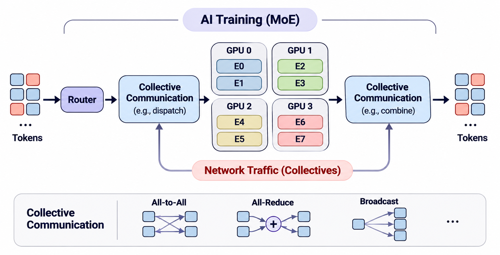

2026 · IPIU · Poster
Frequency-Aware Multi-Resolution Architecture for High-Resolution Spatiotemporal Map Reconstruction from Sparse Observations

Ph.D. Student in Computer Science
Johns Hopkins University · Baltimore, MD
Research InterestsAI Datacenter Networking · GPU Collective Communication
Traffic Characterization & Predictability · Workload-Aware Routing & Load Balancing
I am a first-year Ph.D. student in Computer Science at Johns Hopkins University. My goal is to make AI experimentation faster by reducing communication bottlenecks in distributed training. I study how AI workload execution shapes collective network traffic and seek to translate that understanding into proactive routing and scheduling mechanisms that shorten training job completion time.
Before JHU, I was a full-time research intern at the Korea Institute of Science and Technology (KIST), working on data-processing pipelines and training-performance profiling for spatiotemporal AI. I earned my B.Eng. in Information and Communications Engineering from Hankuk University of Foreign Studies (HUFS) in 2025, graduating summa cum laude (top 1.8%; GPA 4.34/4.50).

Tracing DeepSpeed MoE execution and cross-rank collective timing to the network traffic measured at the NIC.

Designed and evaluated proportional-fair multipath forwarding using link throughput and network load to distribute data fragments.